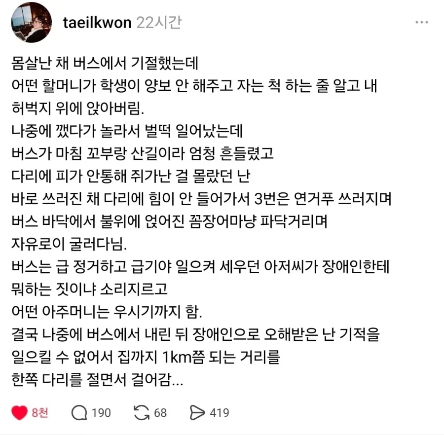

다리 위에 지나가던 할머니가 앉음
댓글
웃긴 드립 치고 싶은데 뭘 해도 그 '점'이 연상된다
줴줴이야
너 봇 아니면 개틀딱 같아
노인네들 저런 경우 존나 많음 약간 자리경쟁 하다가 먼저 앚으면 그대로 어거지로 눌러 앉아버림
이거 원래 다른썰 각색한거잖아
1페이지 병신 보고가라 ㅋㅋㅋ
버스에 앉아 있다가 다리저린거 까지만 진실일 듯
90년대 후반 하이텔에 올라왔던
지하철 경로석에 앉아있다가 어떤 할아버지가 호통쳐서 일어나다가 다리 쥐나서 쓰러졌다는 썰을 각색한건가??
댓글창 1페이지 개웃기네 ㅋㅋ
아 1페 존나웃기네 진심
ㅋㅋㅋ 나도 저런적있음.
널널한버스에서 도착하기 1시간정도 남았는데.
피곤해서 기절했는데, 자다가 물컹한 무언가가 나 덮쳐서
놀라서 우왁 소리지르며 깻는데
덩치있는 할머니타서
앉기도 전에 버스가 출발해서 내정면으로 덮쳐진거임;;;
참고로 나 앞뒤로 전부 빈자리였음